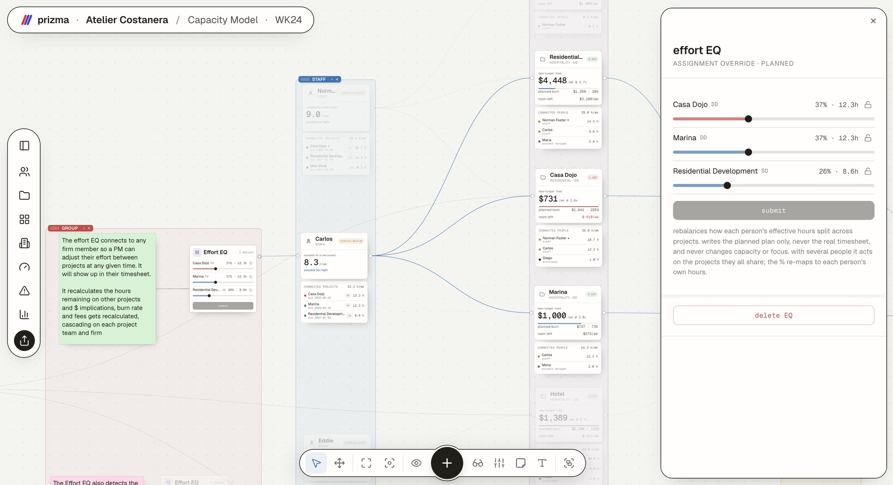

Capacity intelligence for architecture firms
Prizma is a live model of your architecture firm. Every commitment recalculates capacity, fees and risk across the whole practice.
Deterministic core · Agentic layer · Data you already have
Pull a slider · ask the sticky. Every figure recomputes through the model.
( 01 ) · The five questions
The state of the firm right now, recalculated on every connection you make.
Drop a potential project on the canvas as a dashed node. See what every person and team gains and loses before anything is signed.
Fee measured against the burdened cost of the exact people connected to the work. Never a blended rate, never an average of averages.
The budget is fixed in money. The hours ceiling moves with the real rates of who you assign, so a senior-heavy team burns the room faster and you see it instantly.
How much of your capacity can move between teams, and how much is locked inside one silo. The difference is where growth stalls.
Who orphans a project if they leave tomorrow, and how many people the firm can lose before delivery breaks.
( 02 ) · Roadmap
Ordered by engineering risk, not by topic. The phase boundary is a wall, not a suggestion.
Arithmetic on data the firm already has. No learning, no prediction, no assumptions. Every connection propagates through the whole model, so it cannot hallucinate.
yield · stability margin · fragility · room left · utilization · break even
Effort curves across each project, overlaid to pick a start date by peaks, revenue over stages with and without the potential project. Built with the pilot firms, because they decide the level of detail.
effort curves · start dates · staged revenue · reassignment editor
The system learns from accumulated history. What hospitality yields per hour, where fee assumptions are wrong, what to take on next. Agentic from the ground up; the benchmark data compounds here.
type intelligence · fee benchmarks · recommendations · simulation
( 03 ) · Why not a PM tool
Four things you place. One gesture. Every figure on this page is derived from them.
( 04 ) · The instrument
Slide one person’s hours between projects. Burn, room and fees recascade through every team it touches.

( 05 ) · The math
The engine is plain arithmetic on data your firm already has: who works where, what each hour truly costs, what each project pays. Agents sit on top of that model to run scenarios, flag risk and prep decisions; they operate the arithmetic, never invent it. Every number traces back to a connection you can point at.
You connect a person to a project. The model derives their hours from capacity, focus and the team around them.
Numerators and denominators aggregate across the firm and divide once, at the end. No average of averages, ever.
Every threshold and penalty is an assumption you can see and change. We fix the formulas. We never fix the figures you feed them.
( 06 ) · Adaptability
A model that cannot bend describes the firm it was built for, and no other. A model that bends anywhere describes nothing. The line sits in one place. The arithmetic is ours, everything it operates on is yours.
Sums aggregate and divide once. Ratios are never averaged. Fixed on purpose, because it is what makes a figure mean the same thing in your firm as in any other.
Every threshold, penalty and rate is an assumption you can see and change. Change one and the whole firm recomputes in front of you.
The model describes things by what they contribute: hours, cost, revenue, demand, scope. If your office has something our list does not, you can still describe it.
Build the figures we did not think of, from quantities the model already computes. They sit beside ours, marked as yours.
If Friday afternoons belong to the studio, the model should know that. Finding the things our list is missing is what the pilots are for.
( 07 ) · Questions
Then the math will feel familiar, because a spreadsheet is deterministic too. What it cannot do is propagate. Change one assignment and nothing downstream recalculates. Prizma keeps the assumption-first arithmetic and adds the connections, so one change updates the whole firm at once, for everyone.
Your team list, salaries, project fees and who works on what. You do not need integrations to start. A firm of fifteen people is modeled in an afternoon, and the model stays useful from day one.
Neither do most firms: 42% cannot report their own net margin. Prizma does not need calibrated truth to start. You give rough figures, the model makes them explicit and live, and they sharpen as real numbers replace guesses. Assumptions you can see beat certainty you do not have.
No. The model starts from your team list, your rates and your fees. Tools built on timesheets need months of history before a forecast means anything; Prizma answers on day one. If you keep timesheets, they calibrate the model over time. They are never required.
PM and accounting tools are systems of record. They tell you what already happened. Prizma is a decision layer. It tells you whether the next commitment fits, whether it pays, and what it costs the rest of the firm. Keep whatever you invoice with; Prizma sits beside it, not instead of it.
That is a design decision rather than a courtesy. The arithmetic is fixed on purpose, so a figure means the same thing in every firm. Everything the arithmetic operates on is yours: the constants, the kinds of things that exist in your office, and any figure you want to build from the ones we compute. Pilots exist partly to find what our list is missing.
Salary data stays inside your firm. Pilots run on a private instance, nothing is used to train anything, and the benchmark layer (Prizma Z) only ever works with aggregated, anonymized figures from firms that opt in.
Both, in the right order. The engine runs plain arithmetic on the connections you draw, with nothing predicted behind your back. An agentic layer sits on top to test scenarios and prepare decisions. Agents work with the numbers; they never make them up.
Four weeks with your real data. We model the firm together in the first session, then you run your next go/no-go decisions through the canvas and judge the answers against your own instinct.
Pilots for firms of 5–100 people · Four weeks · Your real data · No timesheets